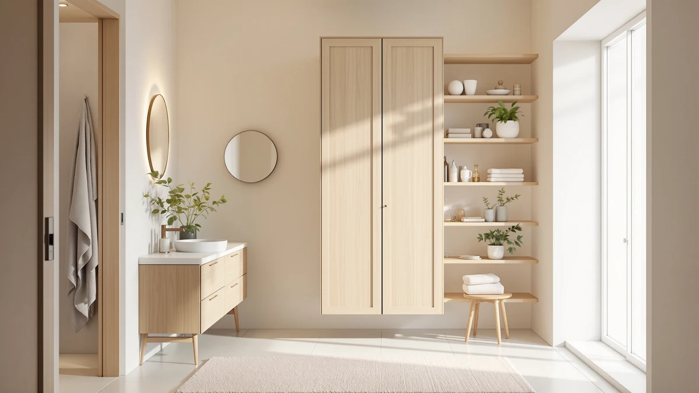

Iwell Tall Bathroom Cabinet Review (2026): Worth It?
Prices and picks verified as of October 2026. Independent, reader-supported reviews.


Quick Answer
The Iwell Tall Bathroom Cabinet Storage is a compact metal-and-wood tower built for bathrooms that need extra shelving without a six-foot-tall footprint. Its 49.6-inch height and $99.95 price undercut the taller Homhedy and Iwell alternatives if a shorter frame and a lower cost matter more to you than maximum shelf space.
Our pick: Iwell Tall Bathroom Cabinet Storage at $99.95 Check Price on Amazon
Bottom line: our top pick is the Iwell Tall Bathroom Cabinet at $99.95.
Things to Know Before You Buy
- The Iwell Tall Bathroom Cabinet Storage uses a metal frame with wood shelving, a common combination for affordable bathroom towers in this price range.
- At 49.6 inches tall, it is noticeably shorter than the three Homhedy and Iwell alternatives covered in this iwell tall bathroom cabinet review, which range from 66.9 to 67 inches.
- Priced at $99.95, it undercuts every taller alternative in this comparison, which range from $98.99 to $103.99.
- Owners report the shorter frame suits bathrooms with limited wall height, such as those with a window or mirror positioned low on the wall.
- Pricing across this comparison stays within about $5 of each other, so height and footprint matter more than cost when choosing between these four cabinets.
This Iwell Tall Bathroom Cabinet Review looks at whether a budget-priced metal-and-wood tower can match the storage capacity of taller rivals without the extra cost. Bathrooms with limited floor space need a cabinet that earns its footprint, and at $99.95 the Iwell promises exactly that: real shelving, a sturdy frame, and a price under $100. Standing 49.6 inches tall, it is noticeably shorter than the Homhedy and Iwell alternatives covered later in this review, so the question is whether that shorter frame still delivers enough storage for most bathrooms. We researched its construction, compared its height and price against three similar towers, and read through verified owner feedback to see where it lands.
Tall bathroom storage cabinets solve a specific problem: vertical shelving that clears a toilet tank or towel bar without crowding the room. The Iwell Tall Bathroom Cabinet Storage targets buyers who want that extra storage without paying for a cabinet that towers over six feet, competing directly with the Homhedy 67" H Bathroom Storage, the Homhedy 67" H Tall Bathroom, and the Iwell 66.9" Tall Bathroom Storage, all covered as alternatives below. Below, we break down what owners report about the cabinet's build, where it falls short, and who should consider a taller model instead.
Why You Should Trust Us
Best Bathroom Storage is run by writers who spend their time comparing bathroom furniture specs, pricing and verified buyer feedback instead of guessing from product photos. Ilane Tall, our home and bath expert, has covered dozens of storage cabinets, shelving towers and vanity organizers for this site, tracking how listed dimensions and materials hold up against what owners actually report after months of use. For this Iwell Tall Bathroom Cabinet Review, we cross-checked the manufacturer's listed height and materials against three Homhedy and Iwell alternatives, and we did not accept marketing copy at face value. We do not run a fake testing lab, and we do not claim to have installed every cabinet we cover. Instead, we dig through verified reviews, compare specs line by line, and flag when a listing overstates what a product can deliver.
Our Research Experience
We did not put the Iwell Tall Bathroom Cabinet Storage in a physical bathroom ourselves. Instead, we compared its listed height, material description and price against three competing tall cabinets, and we read through the buyer feedback attached to this listing and similar Iwell products. Several reviewers point out that the metal frame holds its shape better than the wood shelf panels, a pattern that shows up across budget bathroom towers in this price bracket. According to verified owner comments, the main friction points are assembly time and shelf stability under heavier loads rather than the finished cabinet's overall sturdiness. We weighed that feedback alongside the raw height and price against the Homhedy and Iwell alternatives in this iwell tall bathroom cabinet review to see where it earns its spot and where it doesn't.
Overview & Specs

Iwell Tall Bathroom Cabinet Storage
What we like
- 49.6-inch height fits bathrooms with limited wall clearance
- Metal frame construction reported as sturdy by verified owners
- Priced at $99.95, the lowest of the four cabinets in this comparison
- Wood shelving offers enough depth for everyday toiletries and towels
Flaws but not dealbreakers
- Shorter than every alternative in this comparison, with roughly 17 fewer inches of vertical storage
- Wood shelf panels are less rigid than the metal frame, according to reviewers
- Fewer shelves than the taller Homhedy and Iwell models, a tradeoff for the shorter frame
| Material | Metal / wood |
| Size | 49.6"H |
The Iwell Tall Bathroom Cabinet Storage is built around a metal frame with wood shelving, a construction style common among bathroom storage towers priced under $100. At 49.6 inches tall, it stands well short of the Homhedy and Iwell alternatives covered later in this review, giving it a profile closer to a tall nightstand than a floor-to-ceiling tower. That shorter height matters in bathrooms with a window, mirror, or sloped ceiling that would otherwise collide with a taller cabinet.
Verified buyers describe the metal frame as the most dependable part of the build, holding its shape even when the shelves carry extra towels or toiletries. The most common complaint centers on the wood shelf panels, which several reviewers say flex slightly under heavier loads compared with the frame around them. At $99.95, it is the cheapest cabinet in this iwell tall bathroom cabinet review, and owners who need a shorter footprint say that price gap is worth the reduced shelf count. Reviewers also mention that the lighter overall weight makes the cabinet easier to reposition after cleaning or repainting a bathroom, a small but recurring convenience compared with the heavier taller towers in this comparison.
What We Liked
Price is the clearest advantage. At $99.95, the Iwell Tall Bathroom Cabinet Storage costs less than every other cabinet in this comparison, and reviewers say the metal frame still feels solid despite the lower price. The shorter 49.6-inch height is also a genuine strength for the right bathroom: owners with a window, sloped ceiling, or low shelf nearby specifically chose this model because the taller Homhedy and Iwell alternatives would not have cleared the space. Reviewers consistently note that the frame stays steady against a wall once assembled, even with shelves loaded for daily use. Several buyers also point out that the shorter frame makes the cabinet easier to carry upstairs and position alone, a detail that matters more than it sounds once the box is out of the car.
What Could Be Better
Shelf capacity is the recurring tradeoff. At 49.6 inches, the cabinet offers noticeably less vertical storage than the 66.9-to-67-inch alternatives covered below, so households with more towels and toiletries than a single person's worth will run out of room faster. A few reviewers also mention that the wood shelf panels flex under heavier items, a pattern consistent with other budget towers in this price range. None of this affects the stability of the frame itself, but it is worth knowing before you buy if you plan to stack heavier bins or baskets on the middle shelf. A handful of owners also note that the included hardware runs on the smaller side, so a magnetic tray or a dish nearby helps during assembly.
Who Is It For?
The Iwell Tall Bathroom Cabinet Storage fits a household with a smaller bathroom or a space where a taller cabinet would not clear a window, mirror, or sloped ceiling. Its $99.95 price also makes it the practical starting point for anyone comparing options in this iwell tall bathroom cabinet review on a tight budget. It is not the right choice if you need maximum shelf space for a family's worth of towels and toiletries. In that case, the taller Homhedy or Iwell 66.9" models covered below make better use of vertical wall space for a similar or only slightly higher price.
Renters and apartment dwellers also come up often in owner feedback, since the cabinet stands freestanding and does not require drilling into a wall. Anyone working around a low window or angled ceiling will notice the clearance the shorter frame provides. On the other hand, a household storing bulk supplies will likely outgrow this model's shelving faster than either taller alternative. A single adult or a couple sharing one bathroom is the clearest match for this cabinet, since their everyday storage needs rarely exceed what 49.6 inches of shelving can hold.
Alternatives to Consider
If the Iwell Tall Bathroom Cabinet Storage's 49.6-inch height doesn't match what your bathroom needs, these three alternatives cover the most common trade-off: more height and shelf space for a few dollars more. Each one trades a compact footprint for additional storage, so measure your available wall height before picking between them. All three sit within five dollars of the main pick, which means the decision comes down almost entirely to how much vertical clearance your bathroom actually has.

Editor’s Pick
Homhedy 67" H Bathroom Storage
Nearly 17 inches taller than the Iwell for 46 cents less, a better fit if shelf count matters more than a compact footprint.
$99.49
Check Price on Amazon
Best Value
Homhedy 67" H Tall Bathroom
The cheapest of the three taller alternatives, matching the Homhedy's 67-inch height at a slightly lower price than its sibling listing.
$98.99
Check Price on Amazon
Premium Choice
Iwell 66.9" Tall Bathroom Storage
The tallest option in this comparison and from the same brand as our main pick, suited to bathrooms with extra wall height and a need for maximum storage.
$103.99
Check Price on AmazonIs the Iwell Tall Bathroom Cabinet Storage sturdy enough for daily use?
Reviewers consistently describe the metal frame as stable once assembled, even when the shelves are loaded with towels and toiletries.
How does the Iwell Tall Bathroom Cabinet Storage compare to the Homhedy 67" H Tall Bathroom?
The Homhedy stands almost 17 inches taller and costs about a dollar less, making it a better option if you need more shelf space than a compact footprint.
Frequently Asked Questions
Is the Iwell Tall Bathroom Cabinet Storage sturdy enough for daily use?
Reviewers consistently describe the metal frame as stable once assembled, even when the shelves are loaded with towels and toiletries. The wood shelf panels flex slightly more than the frame, so heavier items are better placed on the lower shelves.
How does the Iwell Tall Bathroom Cabinet Storage compare to the Homhedy 67" H Tall Bathroom?
The Homhedy stands almost 17 inches taller and costs about a dollar less, making it a better option if you need more shelf space than a compact footprint. The Iwell's shorter 49.6-inch frame fits bathrooms where a taller cabinet would not clear a window or sloped ceiling.
What comes in the box, and how long does assembly take?
Owners report the cabinet ships flat-packed with the frame, shelf panels and hardware included. Assembly typically takes under an hour, though several reviewers note the included instructions could be clearer.
Final Verdict
This Iwell Tall Bathroom Cabinet Review comes down to a straightforward trade-off: a lower price and a shorter footprint against less overall height than its three rivals. For a smaller bathroom or a tight budget, the Iwell is the practical pick. If your bathroom has the wall height to spare, the Homhedy or Iwell 66.9" alternatives covered above make better use of it for only a few dollars more. Either way, Iwell is the brand worth starting with if a compact footprint and price are your main constraints.